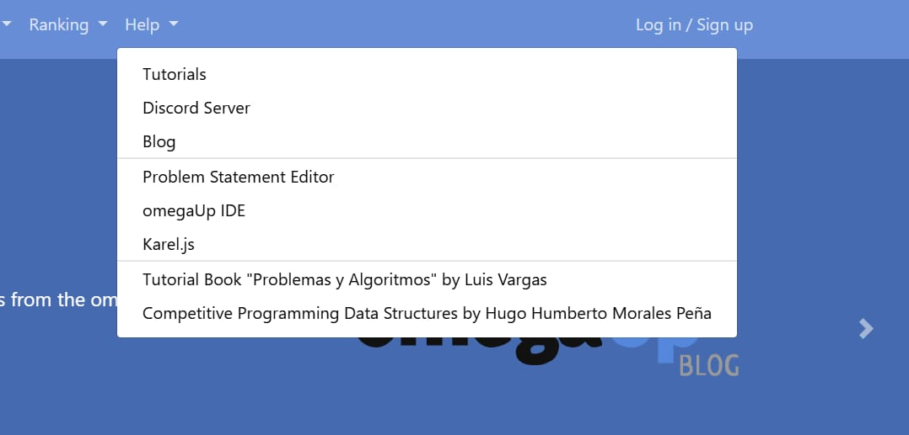
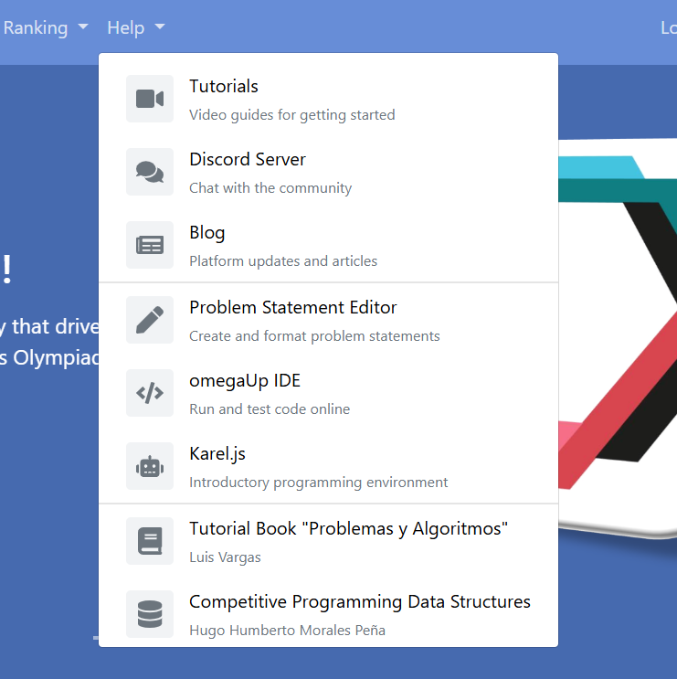
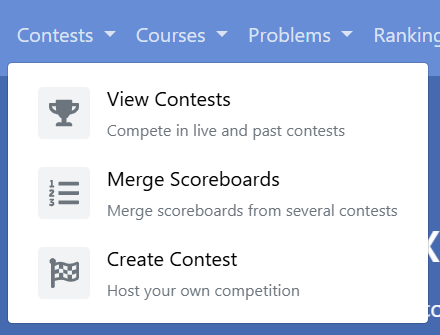
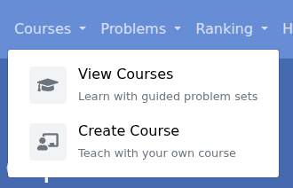
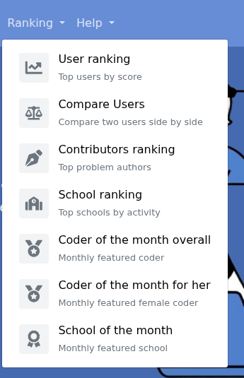
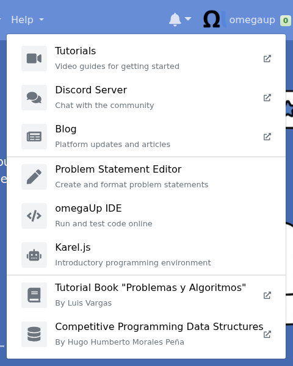
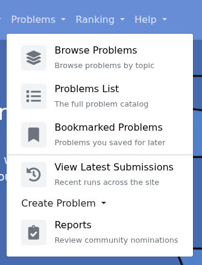
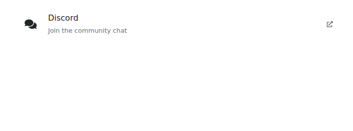
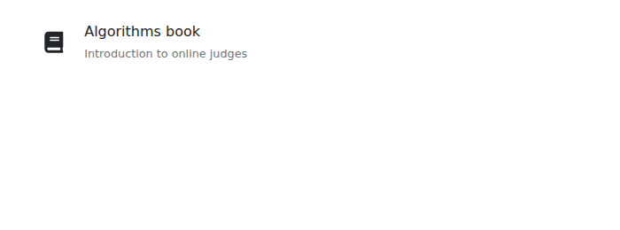
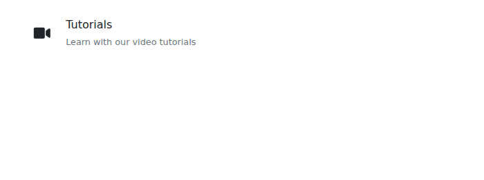

Three pieces of work ran next to the cron project during the summer. None of them was in my proposal. Each started as a small request in a review and turned into something the rest of the site can reuse.
The navigation menus
This began in April as an issue about the Help menu, which was a list of plain links. I gave each entry an icon, a title, and one line saying what it is.


When Juan Pablo approved that, he listed what he would like next: a reusable component for one menu entry, the same treatment for the other menus, and eventually the menus built from a configuration file. I did them in that order.
One component. Eight menu entries were eight copies of the same markup. I extracted one component and rendered the menu from a list. In review I was asked to mark links that leave the site. I derive that from the address, so a new entry gets the marker without anyone remembering to ask for it. Doing that turned up a small inconsistency: some external links were missing the attributes that stop the new page reaching back into the old one, and some internal links had them. The component now decides.
One configuration. Every entry in every menu now lives in one file, with an optional rule for who sees it.
export function visibleEntries(
entries: NavbarMenuEntry[],
access: NavbarAccess,
): NavbarMenuEntry[] {
return entries.filter((entry) => !entry.visible || entry.visible(access));
}That is the whole of the visibility logic. The template used to be full of conditions. Now it filters once and renders what is left.




What review changed
The clearest example of what a review is for is the Problems menu. I had kept a collapsed "Create problem" submenu, and inside it two entries reading "Create zip file" and "I have a zip file". Those names make sense only if you already know what they do.


A lesson about stacks
These were three pull requests stacked on each other. The middle one never got a review of its own. The top one was reviewed and squash merged first, which carried the middle one's changes into main with it, so I closed the middle one as having nothing left to merge.
Nothing was lost. But it was the second time a stack of mine had merged out of order, and it is why every stacked pull request I open now starts with a note saying where it sits and what has to land first.
A page for "this is switched off"
During the system settings review, Juan Pablo wrote that he would like a generic "view unavailable" component that the server could control, so that every disabled feature looked the same. The easy version would have been to write that message into the one page that needed it. I built the component.


After it merged he noticed something I had missed. The way I had wired it in, with an entry file specific to the IDE and its message written inside, meant the next disabled page would need a copy of that file. A follow up made the entry generic and moved the message to the server. It merged seven hours after I opened it.
System settings
This is the oldest thread on the page. In January I asked to work on an issue: let an admin switch the embedded IDE off without a redeploy.
My first attempt was one pull request with a new table, its data access classes, two endpoints, an admin page and all the checks: 994 lines across 36 files. I was asked to split it, and it became four.
The table merged in two days. The data access layer waited four months for a first review and then merged within a day of getting one. The admin page merged in July, during the coding period, five and a half months after I opened it.
The one that merged without merging
The endpoints were the third piece. The admin page was built on top of that branch. I did not mark the page as a draft, so from the outside it looked ready on its own, and when it was approved and squash merged it carried the endpoints into main with it. The endpoint pull request was left open with nothing in it that main did not already have.
That was my mistake and I said so on the pull request. A change that depends on another one should be a draft, and should say so in its first line. Everything I have stacked since does both.
What I took from the reviews
Three things from this thread shaped how I wrote the cron project a few weeks later.
Database access goes in the data access layer, with no exceptions, and a table merges before the code that reads it. That is why every table in the control plane is its own pull request.
A value that is read on every page and changed almost never should be cached and exposed once, in the payload every view already receives, not fetched by each page that wants it.
And a component should only announce what happened. The page script that owns the data makes the request.
The pull requests
Navigation
The Help menu was a list of plain links. Each entry now has an icon, a title and a line saying what it is. In approving it Juan Pablo listed what should come next: a reusable item component, the same style on the other menus, and the menus built from a configuration file. Those became #9871 and #9968.
Juan Pablo suggested the two book entries use the authors' names as the second line, to keep the menu compact.
Eight entries in the Help menu were eight copies of the same markup. This extracts one component and renders the menu from a list.
Juan Pablo asked for a marker on links that leave the site, and a Storybook story for each kind of icon the component accepts. I derive the marker from the address, so nobody has to remember to set a flag.



The Help menu's new style applied to Contests, Courses, Problems and Ranking. It was never reviewed on its own. #9968 was stacked on top of it and merged first, carrying this with it, so I closed this one.
Every menu entry now lives in one configuration file with a rule for who sees it. The template filters the list once and renders what is left.
Juan Pablo asked whether the "create" submenus could go, to keep the configuration simple, and then for clearer names on the two ways to create a problem: Something like "Create Problem from ZIP" and "Create Problem from Scratch"
.
View unavailable
A single component for "this part of the site is switched off", with an icon, a title and an optional message, in every language the site supports.
Juan Pablo asked for it to sit inside a card and be centred vertically.
The disabled IDE page had its own entry file with its message written into it, so the next page to be disabled would have needed a copy. The file is now generic and takes its message from the server. Merged seven hours after I opened it.
System settings
My first attempt at letting an admin switch the embedded IDE off: a table, its data access classes, two endpoints, an admin page and the checks, in one pull request of 994 lines across 36 files. It was too much to review and I was asked to split it, which became #8905, #8918, #8906 and #8938.
Juan Pablo Can you split this PR into smaller changes?
The same day I opened the first two pieces.
Part one of the split. The System_Settings table and its first row, and nothing else, because
omegaUp deploys a schema change before the code that reads it. Approved the day I opened it.
The data access layer for the settings table, with typed getters and setters. It waited four months for a first review, and was then fixed, approved and merged in a day.
Juan Pablo explained why SELECT * is avoided: during a deploy the code and the schema can be out of step for a moment, and an explicit column list survives that.
The endpoints for reading and updating settings. My first version ran SQL from a helper class, and it was put on hold until that moved into a data access class, which became #8918.
This one never merged under its own number. The admin page in #8938 was built on top of this branch, and when that was squash merged it carried this code into main with it. I closed this afterwards. The lesson was mine: a pull request that depends on another should be a draft, and should say so in its first line.
Juan Pablo All database-related changes must live in the DAOs
. Later he suggested caching the value, since it is read on every page and changed almost never, and exposing it once through the payload every view already receives.
The admin page with the switch, and the checks that hide the IDE when it is off. This closed the feature that #8891 had started in January.
Juan Pablo wanted the "this is switched off" message to be a component the whole site could use, which I built separately in #9919 before finishing this one.
Juan Pablo asked for the component to only emit the change and leave the request to the page script, for a computed property in place of an inline condition, and on approving noted For future changes, let's try to keep each PR focused on a single issue
.